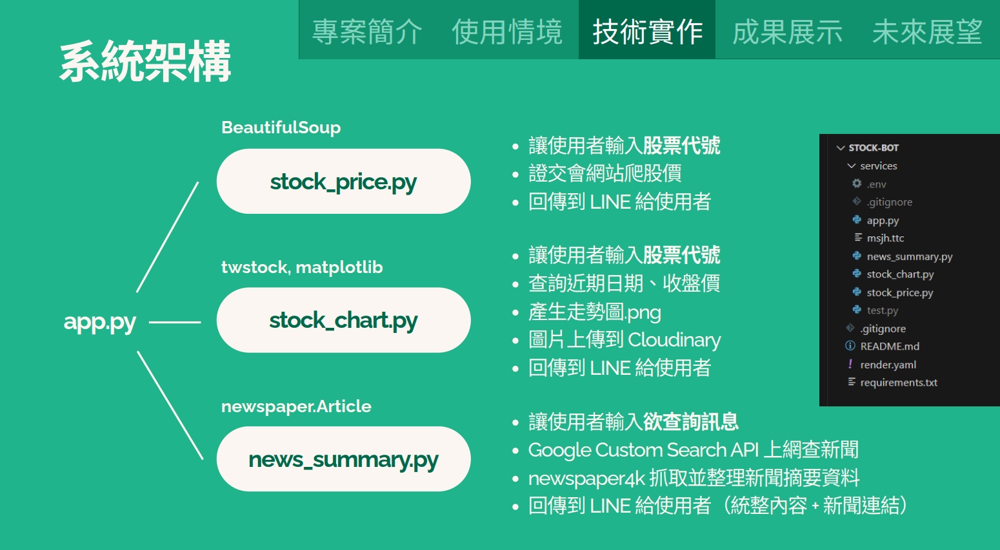
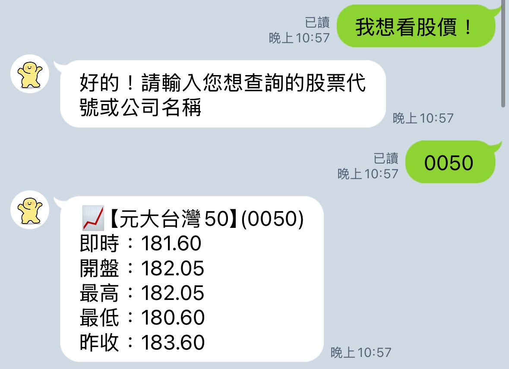
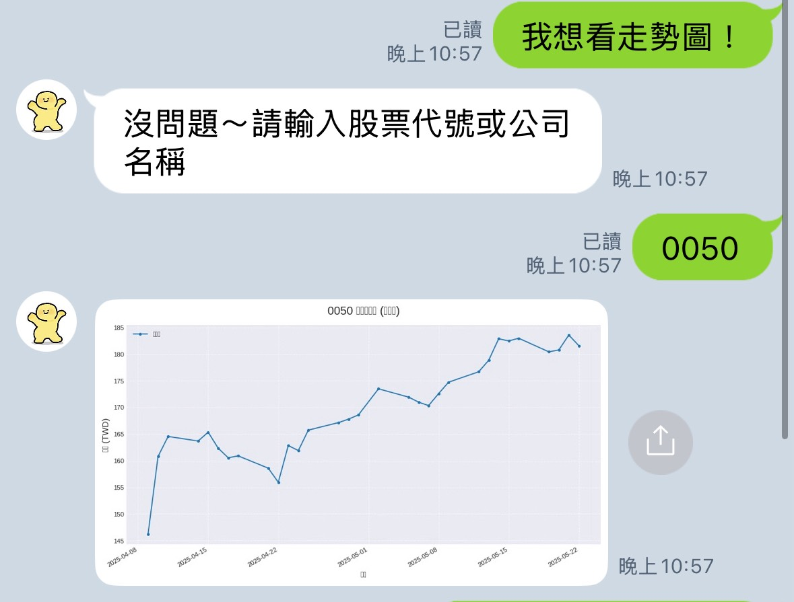
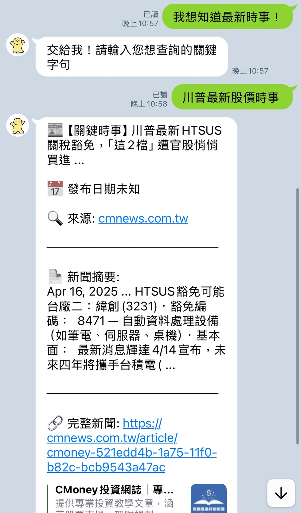

即時股價、歷史走勢、最新時事——一站式財經資訊查詢
LINE Bot 架設——以 app.py 作為主程式，整合三個功能模組（股價查詢、走勢圖、財經時事），串接 LINE Messaging API，並部署至 Render 平台使 Bot 正式上線。
散戶查詢財經資訊時，需要頻繁切換多個網頁與APP。「股往今LINE」觀察到這個痛點，以 LINE 聊天室作為入口，讓使用者直接輸入指令，即時取得股價、走勢圖與財經新聞，實現一站式資訊查詢。


即時股價查詢

走勢圖回傳

財經時事搜尋